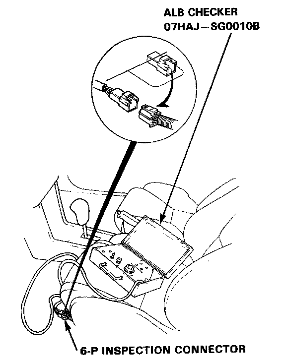
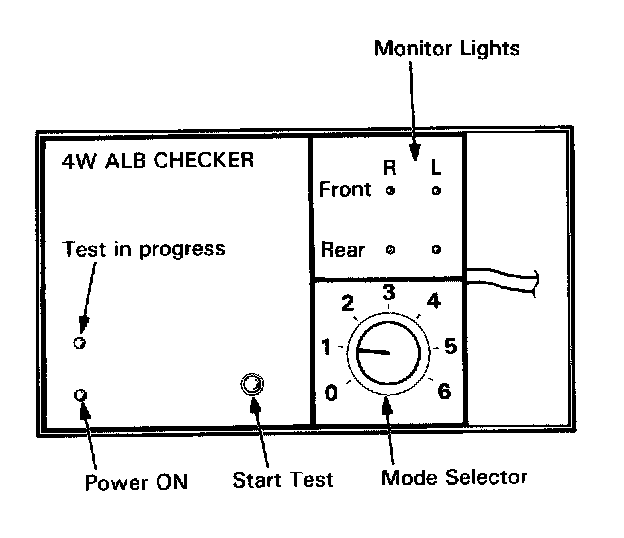
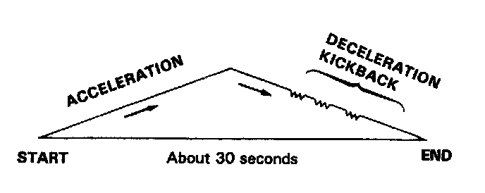

Function Checks
ALB CheckerFunction Test
NOTE:
- The ALB checker is designed to confirm proper operation of the anti-look brake system (ABS) by simulating each system function and operating condition. Before using the checker, confirm that the anti-lock brake system (ABS) indicator light is not indicating some other problem with the system. The light should go on when the ignition is first turned on and then go off and stay off two seconds after the engine is started.
- The checker should be used through modes, 0-5, to confirm proper operation of the system, in any one of the following situations:
- After replacing any ABS component.
- After replacing or bleeding the system fluid (0 mode not necessary).
- After any body or suspension repair that may have affected the sensors or their wiring.
- The procedure for modes 1-5 are in this article and mode 0 (wheel sensor signal). Wheel Sensor Signal Confirmation
Warning:
- Disconnect the ALB checker before driving the car. A collision can result from a reduction. or complete loss, of braking ability causing severe personal injury or death.

1. With the ignition switch off, disconnect the 6-P inspection connector from the connector cover on the cross-member under the driver seat and connect the 6-P inspection connector to the ALB checker.
NOTE: Place the vehicle on level ground with the wheels blocked, put the transmission in neutral for manual transmission models, and in [P] position for automatic transmission models.
2. Start the engine and release the parking brake,

3. Operate the ALB checker as follows,
(1) Turn the Mode Selector switch to "1"
(2) Push the Start Test switch:
- The test in progress light should come ON.
- In one or two more seconds, all four monitor lights should come on (If not the checker is faulty).
- The ABS indicator light should not come ON (If it comes on the checker harness to the 6-P connector connection is faulty).
NOTE: When Test in progress indicator light is ON, don't turn the Mode Selector switch.
4. Turn the Mode Selector switch further to "2."

5. Depress the brake pedal firmly and push the Start Test switch.
The ABS indicator light should not go on while the Test in Progress light is ON. There should be kickback on the brake pedal. If not as described, go to troubleshooting. Initial Inspection and Diagnostic Overview
NOTE: The operation sequence simulated by Modes 2, 3, 4 and 5:
6. Turn the Mode Selector switch to 3, 4 and 5. Perform step 5 for each of the test mode positions.
Mode 1:
Sends the simulated driving signal 0 mph (0 km/h) to 113 mph (180 km/h) to 0 mph (0 km/h) of each wheel to the ABS control unit. There should be NO kickback.
Mode 2:
Sends the driving signal of each wheel, then sends the lock signal of the rear left wheel to the ABS control unit. There should be kickback.
Mode 3:
Sends the driving signal of each wheel, then sends the lock signal of the rear right wheel to the ABS control unit. There should be kickback.
Mode 4:
Sends the driving signal of each wheel, then sends the lock signal of the front left wheel to the ABS control unit. There should be kickback.
Mode 5:
Sends the driving signal of each wheel, then sends the lock signal of the front right wheel to the ABS control unit. There should be kickback.
Mode 6:
Not used on this model.
NOTE: If little or no kickback is felt from the brake pedal in modes 2 - 5, bleed air from the ABS. Service and Repair
Inspection points:
1. The ABS indicator light goes ON in mode 1.
- Check the wiring. If it is OK, the ABS control unit is faulty. If the ABS indicator light goes on 120 seconds later, but the power unit stops. Antilock Brake System
2. There is no kickback in modes 2 through 5.
- Faulty pressure switch (remains ON)
- Shorted wires
- Faulty or disconnected power unit connector
- Faulty power unit relay
3. Weak kickback in modes 2 through 5.
- Bleed high pressure circuits.
4. Power unit stops in mode 1, but it does not stop and there is no kickback in modes 2 through 5.
- Brake fluid leakage
- Bleed power unit
- Clogged power unit outlet
- Clogged or deteriorated power unit hose